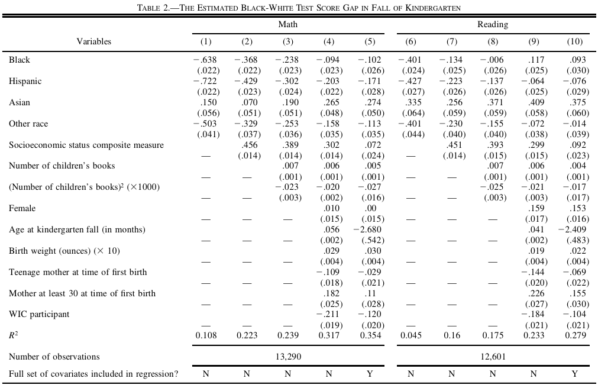
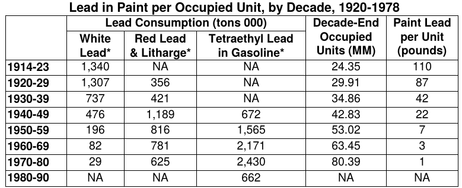
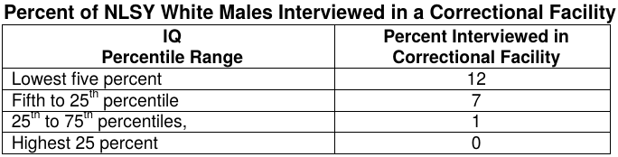
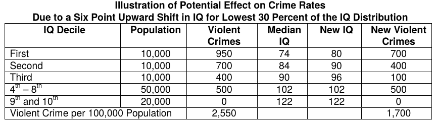
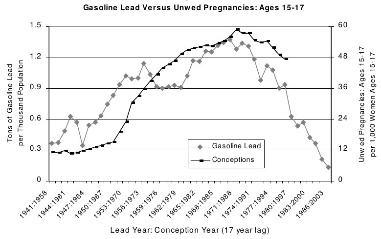
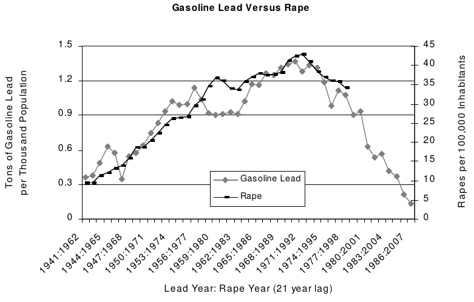
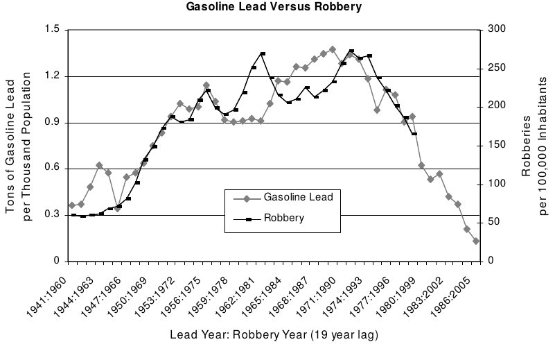
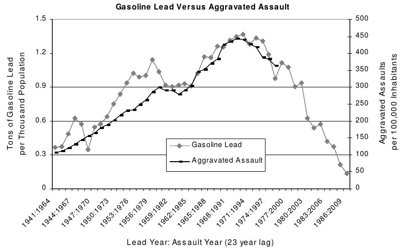
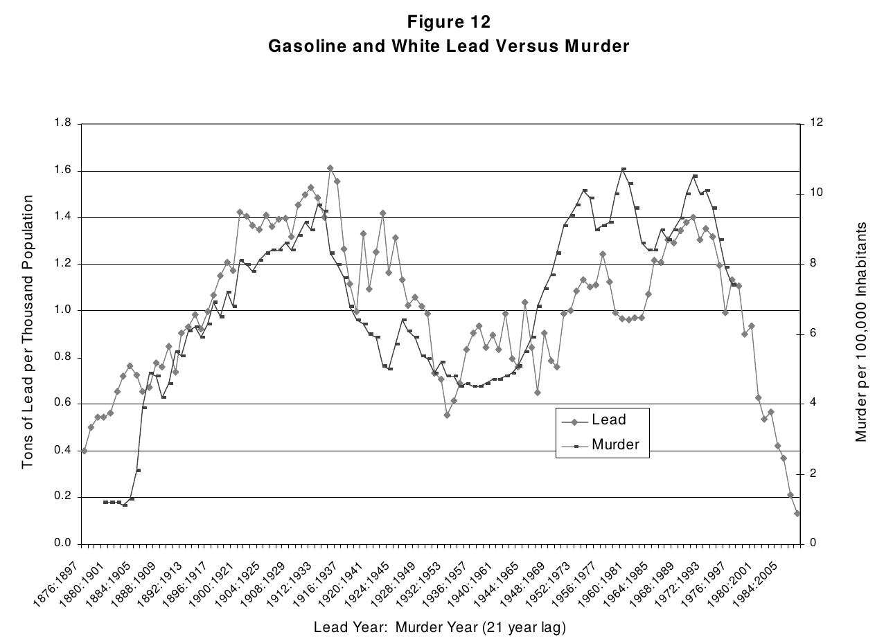

Black-White Test Gaps
ECON 383: Economics of Discrimination
Winter 2018
Productivity and wages
- In competitive markets, workers are paid the value of their marginal product
- More productive workers make higher wages
- Labor-market prejudice alone likely can't explain all of the black/white wage gap (~21%)
- Productivity likely a factor
Determining productivity
- Productivity a combination of innate "ability" and "skills" (education)
- Ability determined by environment, genes, opportunities, etc
Ability tests
- Various tests that measure cognitive "ability"
- IQ, standardized tests, AFQE, etc
- American Psychological Association: 75\% of variance in adult IQ is genetic
Black/white test gap
- We observe substantial test gaps between black and white students
- What explains these gaps?
- Genetics?
- Environment?
- Cultural bias?
Genetics
- Historically common explanation for test gaps
- Commonly used to justify discrimination, prejudice, immigration restrictions, etc
IQ over time
- IQ increases substantially over time
- Black/white IQ gap today the same as 50-year IQ gap
- Average black IQ score today same as average white IQ score in 1967
- Genetics unlikely to have "improved" over such short time spans
IQ gaps over time
- The black/white test gap has decreased substantially over past 50 years
- Genetics unlikely to explain this
- Gap increases as children age, suggesting environmental causes
Fryer and Levitt (2004)
- Use standardized test data to compare "ability" across races
- Data contains environmental information on students, including economics status of parents, background, etc
- Is it race that explains test gaps, or other environmental variables correlated with race?

Fryer and Levitt (2004)
- Black/white test gap entirely explained by environmental variables
- Gap increases after entering school, "probably" caused by school quality (they can't identify this properly)
Lead exposure
- Strong relationship between IQ and blood-lead levels (from medical literature)
- Differences in lead exposure among races (Flint, MI)
- How much can lead exposure explain differences in outcomes?
- Aggregate exposure to lead decreased over time: Drinking water, paint, gasoline, etc
Nevin (2004)

Lead exposure
- Lead paint became less common as leaded gasoline became more common
- Exposure to car exhaust not as evenly distributed
- Cities contain more roads, more idling traffic, higher lead levels
- Increase in use of leaded gasoline mirrors (primarily white) suburban migration patterns
IQ and behavior
- To link lead to outcomes, we first need to link IQ to outcomes
- Causality: lead \(\rightarrow\) IQ \(\rightarrow\) outcomes


Lead and IQ
- A decline in blood-lead levels of 1 ug/dl associated with increase of .23 IQ points
- Average lead exposure in children fell from 24 to 10 from 1976 to 1991 (rise of unleaded gasoline)
- Declines greater for urban children
- Suggests a 6 point IQ increase for high end of lead exposure distribution






Summary
- Test gap unlikely to be caused by genetics
- Observable family/environmental characteristics explain most of the gap
- Single environmental variable (lead) can explain much of the change in IQ, both over time and across groups
- Lead exposure strongly correlated with crime rates, teenage pregnancy
- Large differences in exposure to pollutants by race